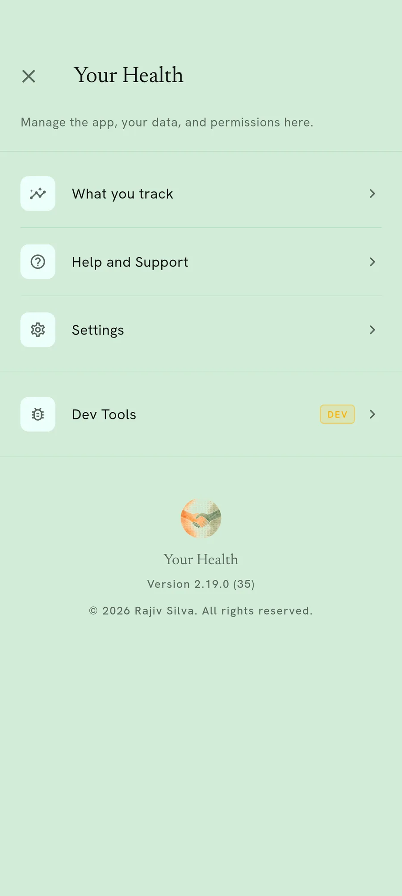

Appearance
Light, dark, or whatever your phone says.
Comfort matters more than decoration here. A darker screen at night, or one with more contrast, can be the difference between reading something easily and giving up on it.

What you can change
Light or dark, or follow your phone. Separately, a colour family that runs through every screen rather than accenting one.
Text size lives beside it, and is worth a look if anything feels small.
One screen, two decisions
Light and dark at the top, colour families underneath.
Why it is more than a preference
Two ends of this app’s audience are a long way apart, and one of them is reading a phone at arm’s length in a bright room.
Making the whole app change together, rather than tinting one bar, is what makes that actually help.
Finding it
Open Display and text size in the menu
Appearance is the first thing inside it. The text-size controls live there too.

Everything here runs on your own phone
No account, no email address, and no reading of yours in our database. You can check that rather than take our word for it.